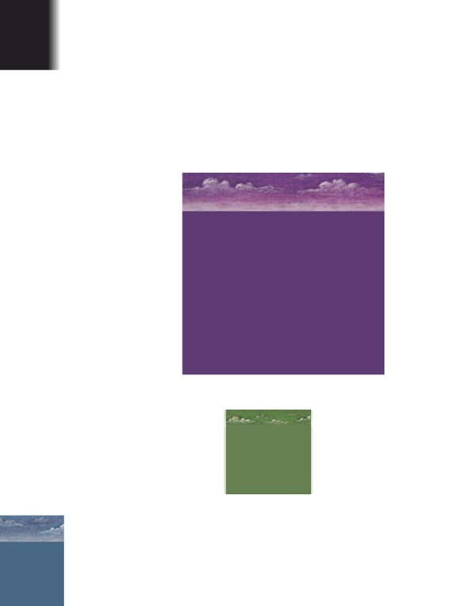
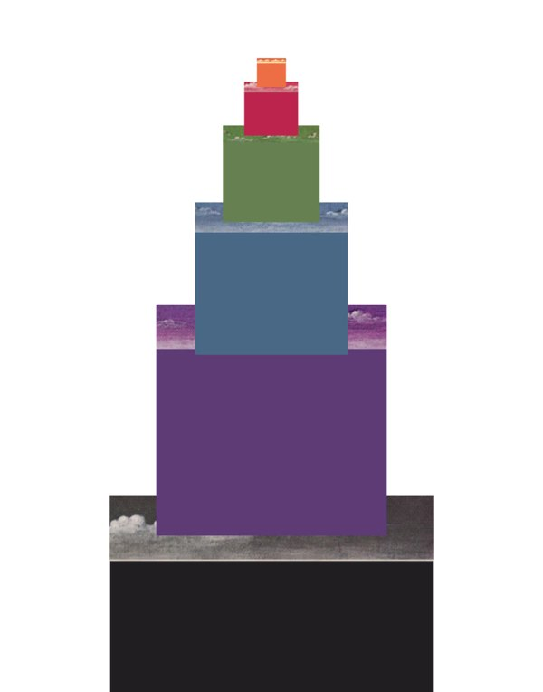
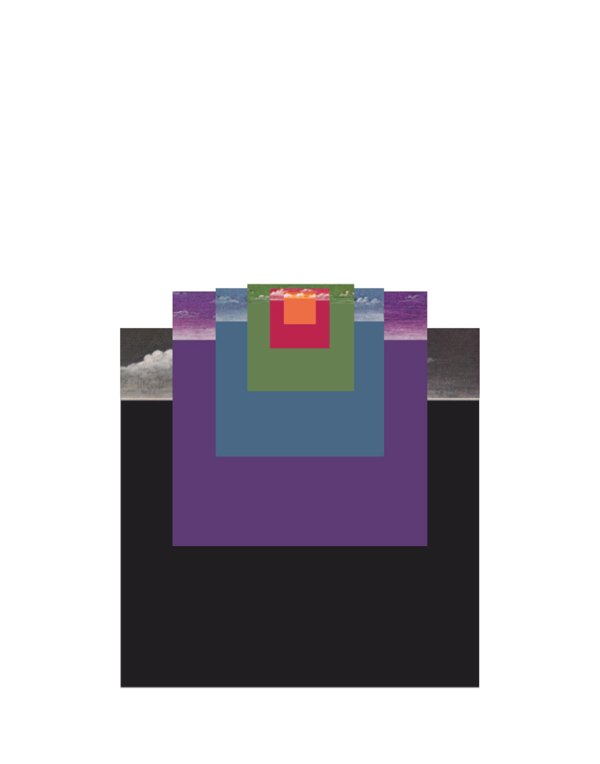
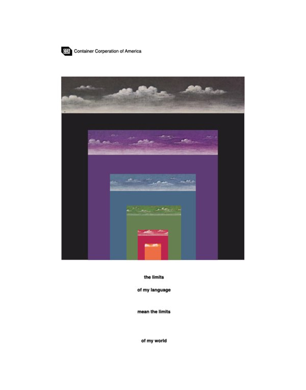
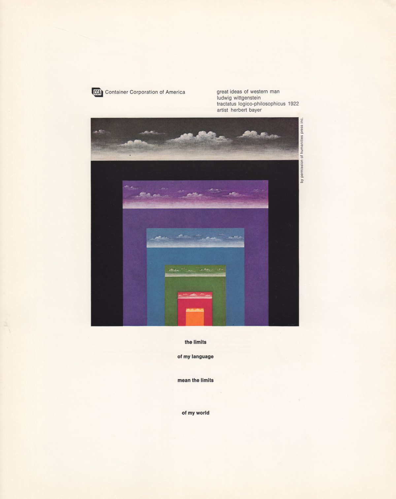
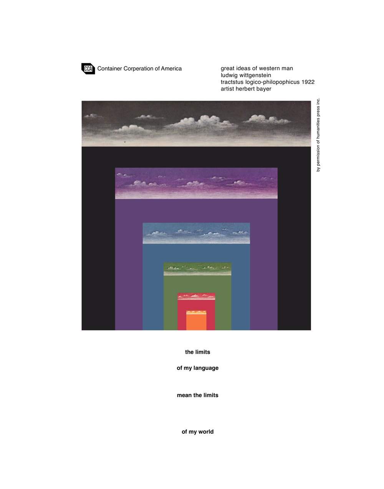
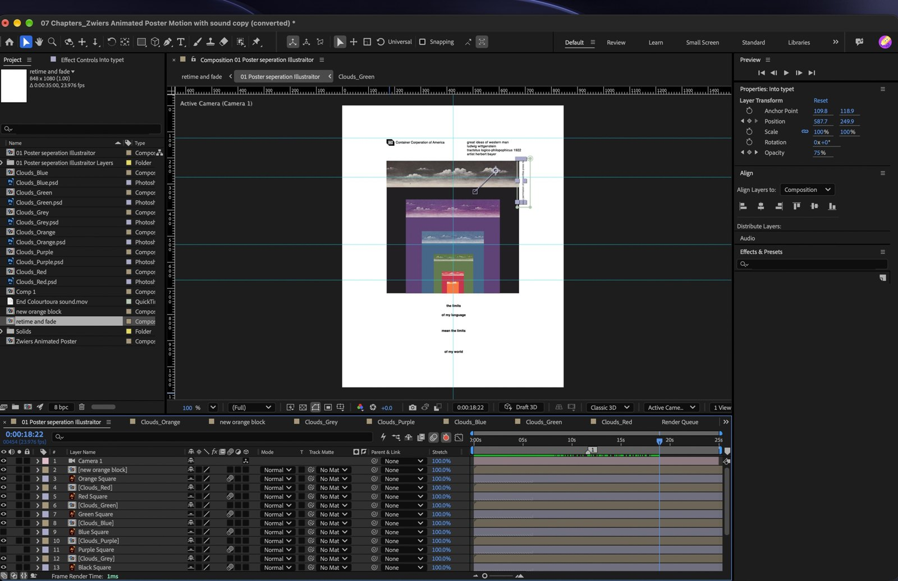
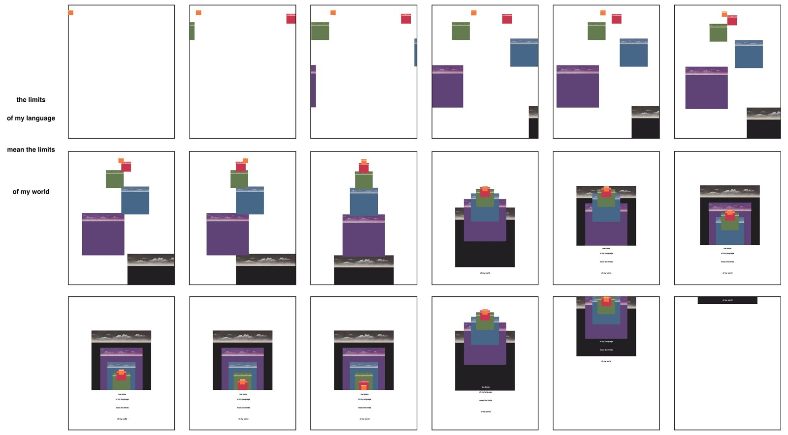
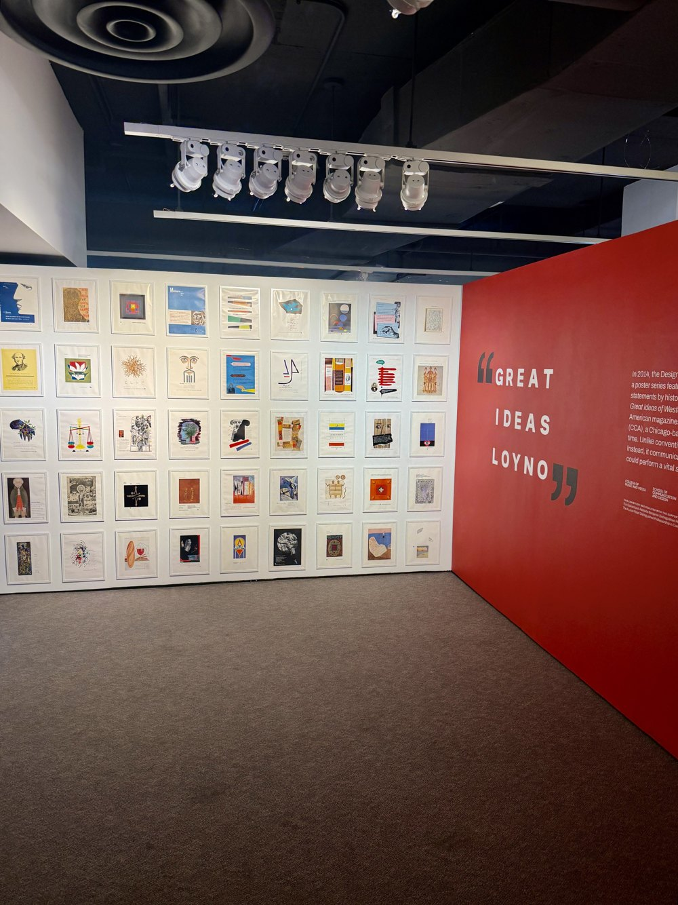

Final animation · 35 seconds, made to loop · as shown at the show
An animated poster for Herbert Bayer’s Great Ideas of Western Man, which sets a line by Ludwig Wittgenstein: “the limits of my language mean the limits of my world.” The blocks build the Tower of Babel, the tower comes down, and the blocks become the poster.




Each student was given a poster from the Container Corporation of America’s Great Ideas series by spinning a wheel in class. Mine was Herbert Bayer’s.




The typeA big part of the project was making the poster’s type appear. The blocks act like a shield: as the biggest block passes over the bottom of the poster, the text appears behind it.
SoundThe beginning of Coldplay’s “Coloratura,” distorted, with the harps, because it adds to the effect I was going for.
Four versions from After Effects, before the final.
Version 4 · October 7
The first full build. No sound, and the poster stays on screen.
Version 5 · October 16
The ending: sound, and the blocks float up to clear the screen.
Version 6 · October 21
The ending refined.
Version 7 · October 30
Moving clouds inside every frame.
FeedbackProfessor Normand liked how the boxes came together so isometrically from the tower, and pushed for moving clouds inside the boxes using precomps. I left the clouds until the end of the project, but got it done.
For the showThe final is a 35-second version that fades out, so it could play on a loop with the other animations.
Playing on a vertical screen at the Great Ideas show at Loyola, between the printed posters from the series.
At the show · filmed November 26, 2025

| Design | John Zwiers |
| Course | Motion Design 1, Loyola University New Orleans |
| Professor | Matt Normand |
| Original poster | Herbert Bayer for the Container Corporation of America, Great Ideas of Western Man. Quote by Ludwig Wittgenstein |
| Typeface | Helvetica |
| Sound | “Coloratura” by Coldplay |
| Made with | Adobe Photoshop, Adobe Illustrator, Adobe After Effects |